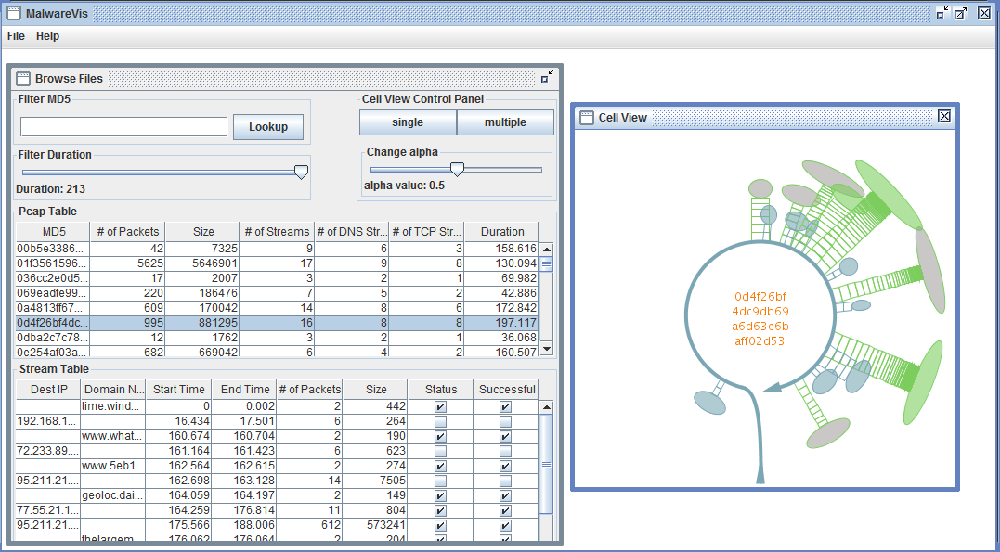
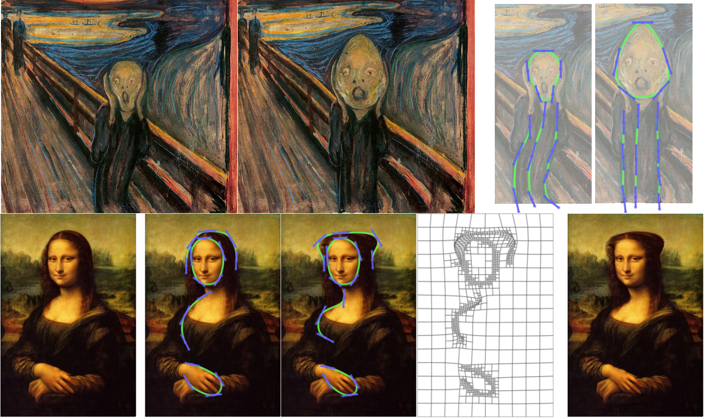

MalwareVis
Malware network traces contain large number of flow records that challenge the human bottleneck in analysis. I develop MalwareVis, a utility that summarizes network flows into streams and allows security researchers to browse, filter, view and compare network traces as entities. MalwareVis uses geometric primitives (Bezier curves, arcs, ellipses) and HDR tone reproduction techniques for interactive, visual-clutter-reduced representations of flow records. Together, they provide faithful and aesthetically pleasing views of malware network behaviors.
PixelTwister
Bézier paths, or piecewise cubic splines, are commonly used for vector graphics and animation design. In PixelTwister, I propose to use Bézier paths for image manipulation. This provides fine-grained control over the region to be deformed. For example, the user can draw splines that follow the artist’s brush-strokes, for changing the hairstyle of Mona Lisa, or straightening the torso of the Screamer.
